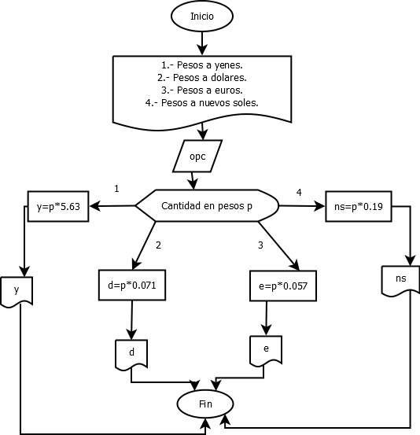

Se pretende crear un programa con el uso de switch, con la finalidad que
al usuario se le muestren opciones de conversion, y asi mismo el usuario pueda
elegir la conversión que desee
Pseudocódigo
Poceso Principal
Escribe(" Conversor de pesos ");
Escribe("Conversion de pesos a yenes,dolares,euros o nuevos soles");
Escribe("Menu");
Escribe("1.- Pesos a yenes");
Escribe("2.- Pesos a dolares");
Escribe("3.- Pesos a euros");
Escribe("4.- Pesos a nuevos soles");
Leer opc;
Segun opc
opcion_1:
Escribe("Ingresa la cantidad en pesos: ");
Leer p;
y = p*5.63;
Escribir("Conversion a yenes: %.2f ",y);
opcion_2:
Escribe("Ingresa la cantidad en pesos: ");
Leer p;
d = p*0.071;
Escribe("Conversion a dolares: %.2f",d);
opcion_3:
Escribe("Ingresa la cantidad en pesos: ");
Leer p;
e = p*0.057;
Escribe("Conversion a euros: %.2f" ,e);
opcion_4:
Escribe("Ingresa la cantidad en pesos: ");
Leer p;
ns = p*0.19;
Escribe("Conversion a nuevos soles: %.2f",ns);
De otro modo:
Escribe("opcion incorrecta ");
FinSegun
Escribe("fin de programa ");
getch();
Regresa 0;
FinProceso
Diagrama de Flujo

Código en Lenguaje C
Este programa muestra la Conversion de pesos a yenes,dólares,euros o nuevos soles.
#include<stdio.h>
#include<stdlib.h>
int main ()
{
int opc;
float p,y,d,e,ns;
printf(" Conversor de pesos\n\n\n");
printf("Conversion de pesos a yenes,dolares,euros o nuevos soles \n");
printf("\nMenu\n\n");
printf("1.- Pesos a yenes\n\n");
printf("2.- Pesos a dolares\n\n");
printf("3.- Pesos a euros\n\n");
printf("4.- Pesos a nuevos soles\n\n");
scanf("%d",&opc);
switch(opc)
{
case 1: printf("Ingresa la cantidad en pesos: ");
scanf("%f",&p);
y=p*5.63;
printf("Conversion a yenes: %.2f ",y);
break;
case 2: printf("Ingresa la cantidad en pesos: ");
scanf("%f",&p);
d=p*0.071;
printf("Conversion a dolares: %.2f",d);
break;
case 3: printf("Ingresa la cantidad en pesos: ");
scanf("%f",&p);
e=p*0.057;
printf("Conversion a euros: %.2f" ,e);
break;
case 4: printf("Ingresa la cantidad en pesos: ");
scanf("%f",&p);
ns=p*0.19;
printf("Conversion a nuevos soles: %.2f",ns);
break;
default: printf("\n\nopcion incorrecta ");
break;
}
printf("\n\nfin de programa ");
getch();
return 0;
}
Salida del programa